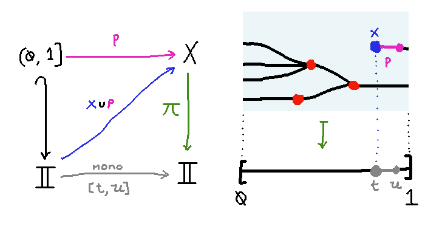

Trees as Fibrations
Suppose we have a topological space $X$ and a continuous map $\pi$ that
takes $X$ to the closed real unit interval $[0,1]$.
Question: Let's say we allow ourselves to require some more data and axioms on this structure,
and quotient out by whatever equivalence relation
we like. Is there a nice way to do that
such that the resulting objects are in bijection with trees?
By trees I mean the following agda datatype:
data Tree : Set1 where
leaf : Tree
node : (A : Set) → ((a : A) → Tree) → Tree
A tree can be a leaf, or else it is a branching node with an unordered set of branches.
I'm pretty confident there is a good answer to this question, and below I try to sketch out how I think it looks:
Extra Data
We require that all of the points in $X$ are marked as
either regular (places where no branching occurs)
or singular (where branching may occur, although note
that it may be a trivial 1-ary branch). In the example
diagrams, the regular points are colored black and the
singular points are colored red.
Axioms
- ("push right") For any $t < u \in [0,1]$, and any $x\in X$ lying in the
fiber over $t$ (i.e. $\pi(x) = t$) there is a unique map $\theta : [t,u] \to X$ such
that $\theta(t) = x$ and $\pi \o \theta$ is the identity on $[t,u]$.
Intuitively: given any point $x \in X$, there is a unique way to "push it forward in time".
This property can also be expressed as a unique lifting property: $\pi$ is right orthogonal to the inclusion of the
0 endpoint of the interval $[0,1] = \I$, if we restrict our attention to monotone maps $\I \to \I$
downstairs.
- ("fill left") For any $t < u \in [0,1]$, and any map $p : (0,1] \in X$ out of the half-open
interval that lies above $(t,u]$ (i.e. for any $v \in (0,1]$ we have $\pi(p(v)) = v$)
there is a unique map $\theta : [t,u] \to X$ such
that
Intuitively: given any path $p : (0,1] \to X$ that's "open on the left", there is a unique way to "fill in its left endpoint".
This property can also be expressed as a unique lifting property: $\pi$ is right orthogonal to the inclusion of the
half-open interval $(0,1]$ into the closed interval $[0,1] = \I$, if again we restrict our attention to monotone
maps $\I \to \I$ downstairs.

The point of this axiom to rule out cases where $X$ has a
branch that "comes into existence" (where we think of time
as proceeding from left to right) with no actual
definite zero-branch branching point that marks its creation. An
example of a space that doesn't satisfy this axiom
is one that has a piece that looks like an interval open
on the left:
- ("regular points are locally trivial")
For any regular point $x \in X$, there exists a neighborhood $[t,u] \subseteq \I$ of $\pi(x)$ such that
there is a unique lift $\theta : [t,u] \to X$ that lies over $[t,u]$ and has $\theta(\pi(x)) = x$,
and furthermore every point of the image of $\theta$ is regular.
Intuitively, every regular point has a neighborhood in $X$ that looks like a single unbranching line.
- ("singular points are isolated")
For any singular point $x \in X$, there exists a neighborhood $[t,u] \subseteq \I$ of $\pi(x)$ such that
for any lift $\theta : [t,u] \to X$ that lies over $[t,u]$ and has $\theta(\pi(x)) = x$,
the only singular point in the image of $\theta$ is $x$ itself.
Intuitively, every singular point has a neighborhood in $X$ with no other singular points in it.
-
The fiber $\pi^{-1}(1) \subseteq X$ over time $1$ is a singleton set. (We
could drop this axiom and instead obtain topological realizations of
forests instead of trees.)
- All points in the fibers over $0 \in \I$ and $1 \in \I$ are regular.
Equivalence Relation
I haven't quite nailed down what equivalence relation I need to quotient by, but I think it's given by the existence
of higher-dimensional cells that have similar sorts of local triviality properties as above.
Bijection between Spaces and Trees
Turning a Space into a Tree
If we're given a space over $\I$ satisfying the axioms above, here's how we compute a tree from it.
Consider the single point $\{*\}$ that lives over the final time 1. It's regular by definition, so there's
at least some nontrivial neighborhood $[t,1] \subseteq \I$ with $t < 1$ such that we get unique lifts over $[t,1]$.
How far back can we push $t$ and still have this property?
Say $t$ is a unique precedent of a point $x\in X$ lying
over $u$ if there is a unique lift $\theta : [t,u] \to X$ over
$[t,u]$ with $\theta(u) = x$.
Say $t$ is a strong unique precedent of $x$ over $u$ if for all $t' ≥ t$, we have that $t'$ is a unique precedent of $x$.
Consider the set of strong unique precedents of $*$ over $1$. It's
closed to the right, by the universal quantifier in the definition
of strong unique precedent. So consider its infimum.
By the "fill left" axiom, it must attain its infimum. It could be at time 0, in which case we have a leaf of the tree,
but otherwise it must be a singular point — for otherwise the local triviality of regular points would lets us
extend to unique precedents beyond where we supposed the infimum to be.
So in conclusion, given any point, we can uniquely "rewind" back
to the most recent singular point that preceded it. Compactness of
the unit interval together with isolation of singular points
guarantees that no path has infinitely many singular points.
Therefore we can use transfinite induction to construct a tree out
of the structure of singular points and intervals of regular
points between them.
Turning a Tree into a Space
This is a more straightforward induction. The tree that is a
single leaf becomes the identity map from $[0,1]$ to itself, with all points declared regular. If we
have a tree that is node, use the induction hypothesis to convert
all of its subtrees $(t_i)_{i\in I}$ to maps $\pi_i : X_i \to [0,1]$.
Then take the union $\bigcup_i X_i$ of all these spaces, and identify together
all the points $\pi^{-1}_i(1) \in X_i$, if any. Reparameterize time by postcomposing with the map
\[ (\dash / 2) : [0,1] \to [0,1/2] \]
to obtain a map
\[ \bigcup_i X_i \to [0, 1/2] \]
Now attach the identity map $[1/2,1] \to [1/2, 1]$ to get the final projection
\[ \pi : \left(\left( \bigcup_i X_i\right) \cup [1/2,1]\right) \to [0,1] \]
Declare the single point that lies over $1/2$ (which had been regular
in each $X_i$, because it was on the boundary fiber over time $1$)
to be singular. All points strictly later than it are regular, and all points strictly
earlier than it came from some $X_i$ and are assigned
regularity/singularity according to the $X_i$ it came from.
Then check that all axioms are satisfied.